Napisala: Jelena Babić
Fotografije: Jelena Babić, AI Google Gemini
„A kad ti je, Jele, bilo loše na izletu?“ – pitanje je kojim me lijepa Trohina kći uvukla u još jednu težačku avanturu. Polazak je bio labavih granica – nekad u petak navečer. Stigla sam očistiti stan, vratiti ronilačku opremu, popiti piće s roniocima, a kad je sunce već zalazilo, stigla je poruka o polasku. Oko 22 sata iz Zagreba smo krenuli: ekipa Dora, Seba i ja iz Velebita te velebitaški zet (ali ne i zetovac) – Venio iz Estavele kao vozač.
Oko jedan iza ponoći stigli smo na oktagon na Crnopcu, gdje su nas već debelo čekali estaveličani – Natalija i Flavio. Kratko nakon dolaska napravili smo dogovor, rasporedili se po horizontali nas šestero, taman svatko na svoj stol i usnuli do osam ujutro.
Ujutro smo produžili makadamom do okretaljke, gdje smo doručkovali i kompaktno natrpali osobnu i društevnu opremu u ruksake. Teško natovareni krenuli smo na put neizvjesne rute prema jami Burinki. Srećom, vrijeme nije bilo prevruće, a lagani povjetarac nam je godio.
Hodajući kroz šikaru, provlačeći se intuitivno stvorenim stazama, nizbrdo pa opet dosta uzbrdo, nakon skoro dva i pol sata osjetili smo hladan zrak koji je dopirao iz Burinke.
Članak od prošlog izleta ostao mi je napola pročitan, a informacije o jami sam čula tek u letu, ni ne sluteći da ću za vikend biti tu. Nisam imala pojma da je 107 m + karabiner dužina prevjesa, a ne vertikale kako sam mislila. Ukupna vertikala iznosi 176 m. „Vrtit ćeš se u krug čitavo vrijeme, stop descender postat će ti simple“ itd. bile su rečenice koje su me uspjele zabrinuti.
Ali, nije majka rodila p… Curila nisam, čak sam se morala potruditi i potegnuti ručicu. Ipak sam se vrtila kontinuirano – boga pitaj koliko okretaja u minuti. Posegnula sam za trikom starih mornara i gledala u horizont. Nakon hmm valjda 5 minuta vrtnje ugledala sam svjetla Dore, Natalije i Flavia i pomislila da sam na dnu, a onda me iznenadilo što ih vidim sitne kao mrave. Pa ta Burinka je ogromna!
Karlovačka nije uspijevala jasno osvijetliti dvoranu, samo su se u daljini kroz čestice blata u zraku nazirali zidovi. Zanimljivo je bilo promatrati onu plavo-sivu atmosferu svjetlosti koja obasjava područje dna ispod vertikale. Još je potrajalo dok sam se izvrtjela do dna prevjesa, kad opet ta Dora vikne: „Idemo do bivka, ne trebaš odmoriti, spuštajući se sjedila si u pojasu.“
I stvarno, trik starih mornara je upalio – čim sam dotaknula tlo nogama, nije mi se vrtjelo niti malo. Krenuli smo prema bivku uz provlačenje ispod, između i preko glonđi, prolazeći pustinjom od suhe sipke crvene glinovite zemlje i grumena iste te zemlje koji su izgledali kao da su se zidovi nekad ožbukani, a onda se sve u jednom trenutku rastreslo i rasulo u fragmente. Želim znati kako je do toga došlo. Geolozi, molim, javite se.
Venio i Seba preopremili su ulaznu vertikalu novim užetom, a tanje uže preko kojeg smo se spustili ostavili su u jami za daljnja istraživanja. Prevjes su skratili gotovo za pola. Prvo se spustio Seba vukući uže na kojem je bio Venio, pa ga je dovukao do suprotne strane zida gdje je Venio ubušio novo sidrište.
Dok je dvojac preopremao ulaznu vertikalu, četvorac je na bivku pripremio opremu za penjanje i crtanje. Krenuli smo do dijela gdje je Flavio penjao penj od dvadesetak metara.
Duboko u noć Natalija i ja smo otišle oprati suđe i osigurati vodu. Kad smo se vratile u bivak, zatekle smo Sebu koji nam je ispričao njihovu akciju na ulaznoj vertikali, a kasnije i onu u starom kanalu. Tamo su ponavljali nacrt u vertikali od stotinjak metara, umorili se i nakon tridesetak metara odlučili ostaviti nešto za sljedeći put.
Venio je već otišao Dori i Flaviu. Za pola sata čovjek je fino nacrtao cijeli dio gdje se Flavio popeo, prohodao još malo tamo gore i – hop – zabilježio novih 100 metara. Tamo je još jedan perspektivan penj koji će trebati popeti, visine 20-30 metara.
Ujutro smo duže spavali, doručkovali i, ovisno kako ko, pojedinačno ili po dvoje napuštali bivak. Neki malo sporije, neki iskusnije i brže. Po novoopremljenoj vertikali izašli smo na površinu. Putem se malo preispitaš život, ali u suštini nije bilo strašno ni popeti se.
A šta se tiče tog Fere – tekst ide pod navodnike 😀 ”Fero je stigao prema planu i dovukao sa sobom, također prema planu i programu, hrpu cedevite. I u jami i tijekom težačkog pješačenja u povratku konzumirali smo na litre cedevite. Zastali smo svježi na vrhu uzbrdice, lagani kao kišica (zbog energije od cedevite) koja nas je blagoslivljala, i gledali dugu koja se pojavila na nebu. Tu smo opalili jedan selfie s našim Ferom opskrbljenim cedevitom.”
Nakon tog ”osvježenja” na vrhu uzbrdice natovareni nastavljamo dalje. Putem se kišica pretvorila u pravu kišurinu pa smo ko pivci pokisli. Nakon dva sata i deset minuta stigli smo do okretaljke. Srećom, kiša je prestala tik pred odredište. Preodjenuli smo se u suho, pozdravili Nataliju i Flavia koji su žurili za Rijeku, a mi smo se počastili pizzom u Dijani.
U jedan sat iza ponoći stigli smo u Zagreb.
Bilo je to lijepo mučenje, a što je najbitnije bit će ga još, jer… Burinka ide dalje!
Ekipa: SOV – Dora Troha, Sebastian Barić, Jelena Babić, SUE – Natalija Malbašić, Venio Fabijančić, Flavio Karabaić
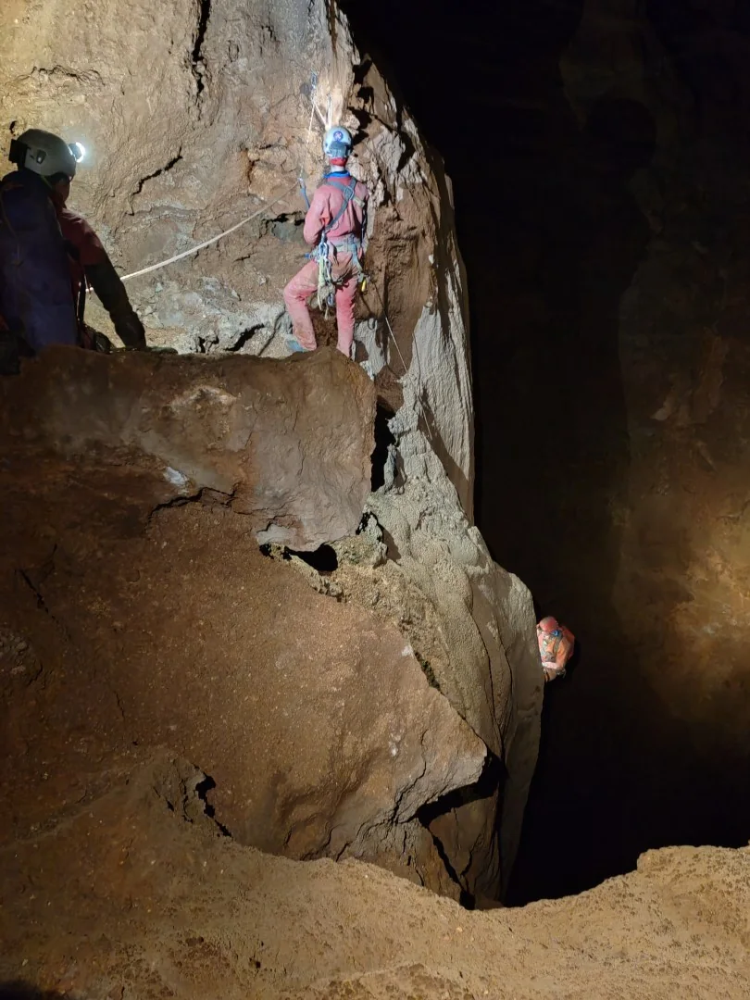
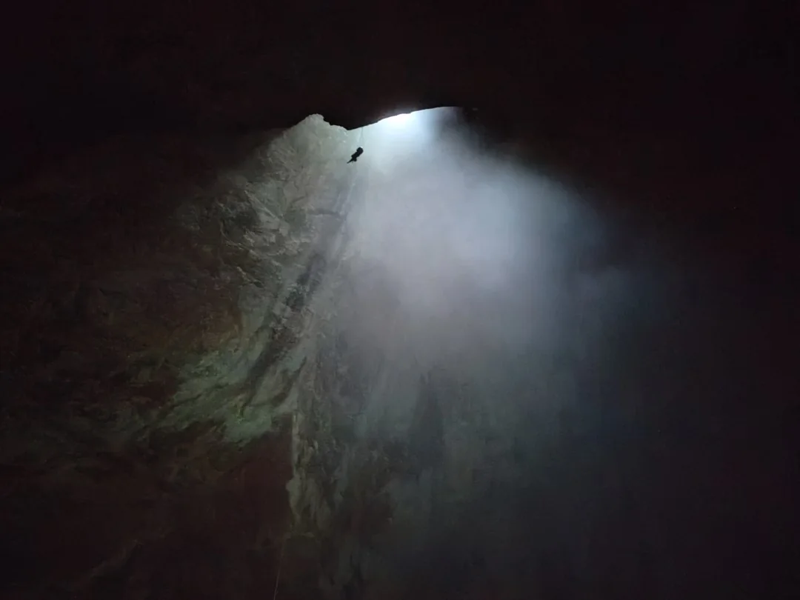
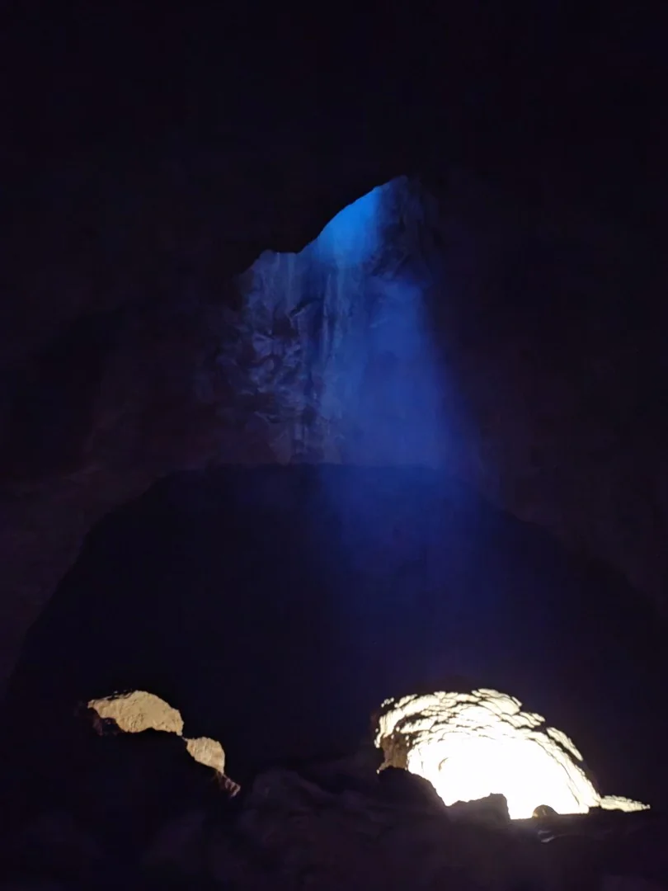
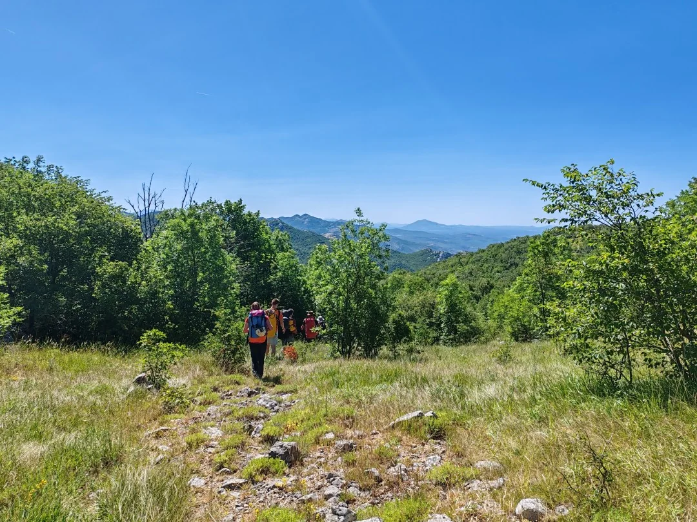
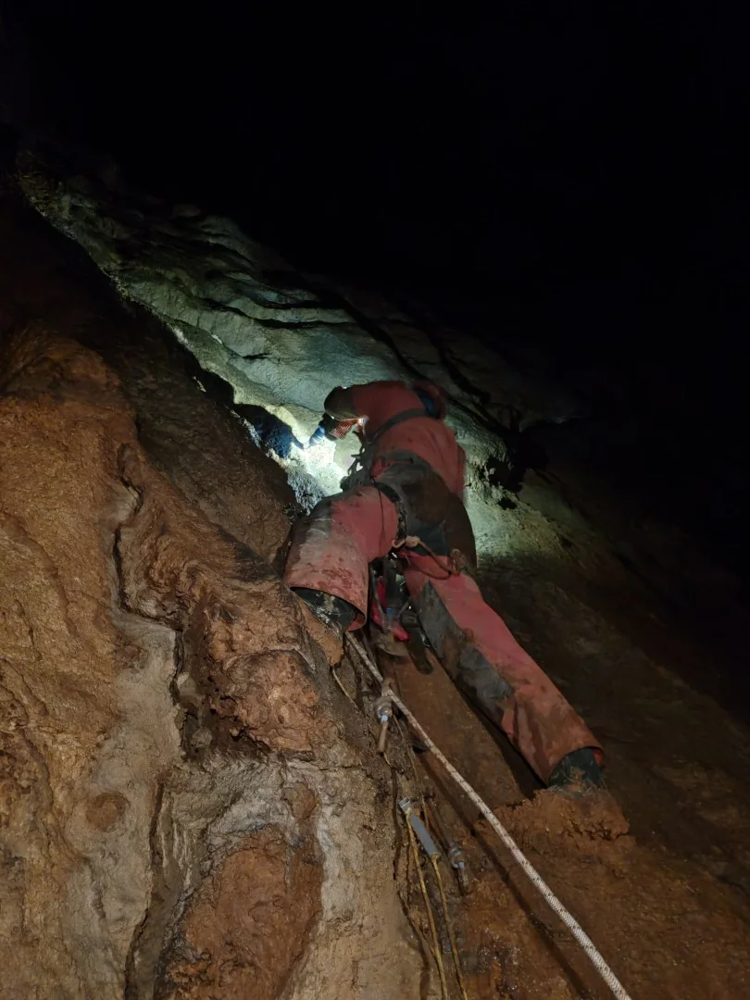
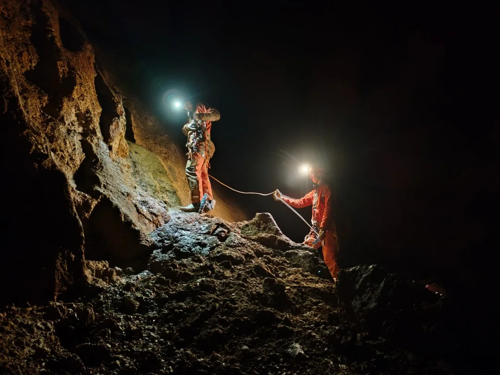
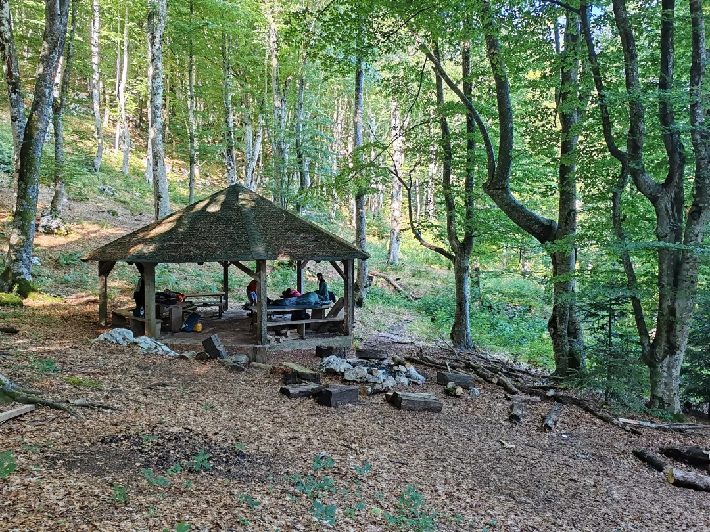
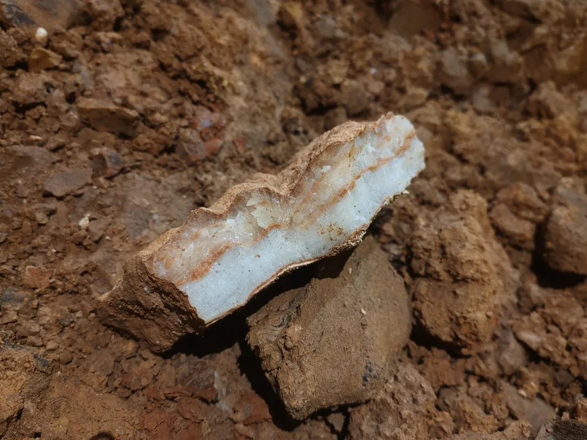
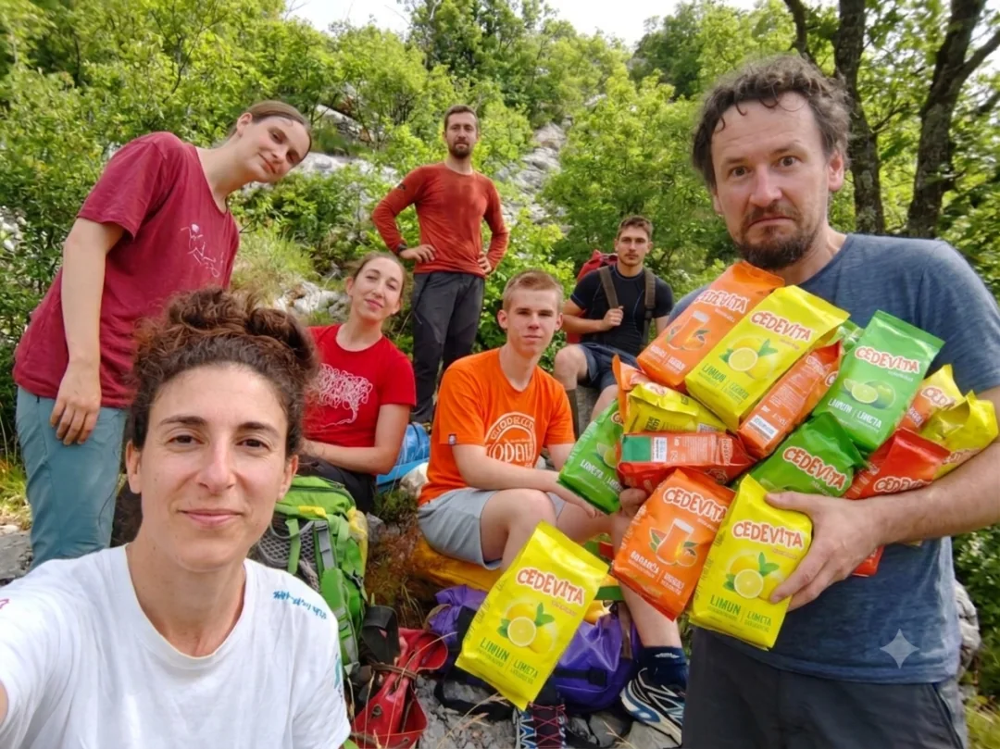
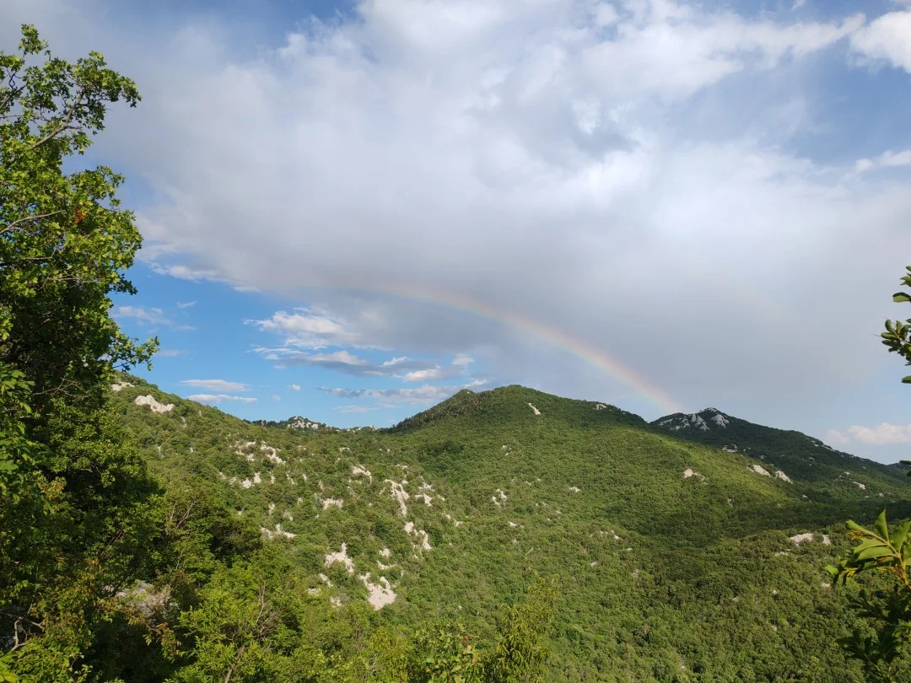
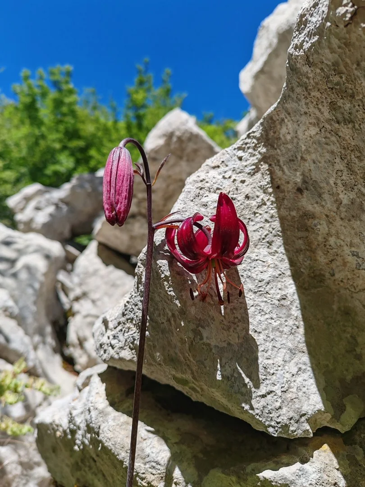
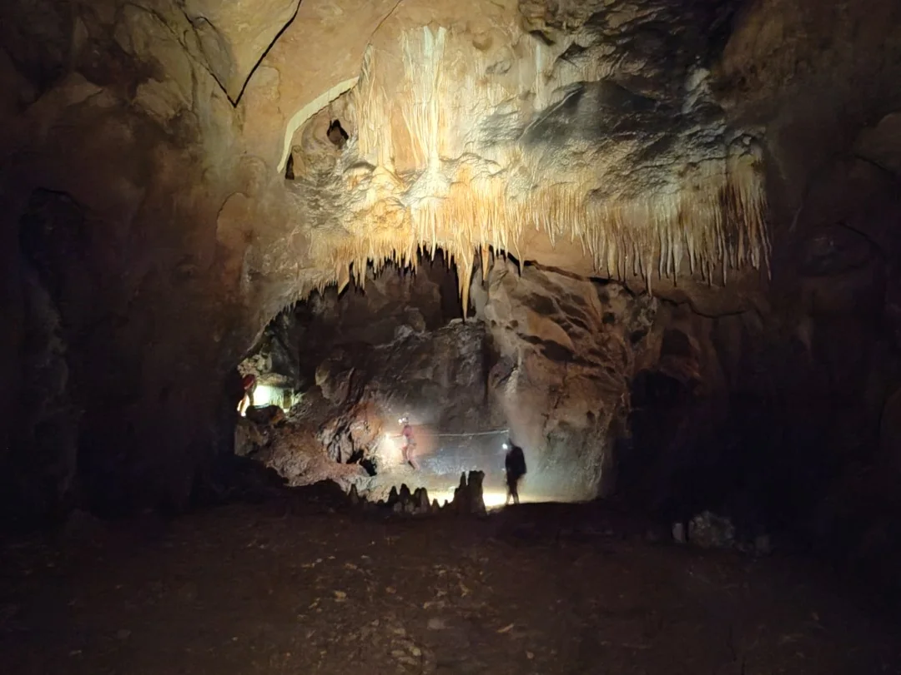
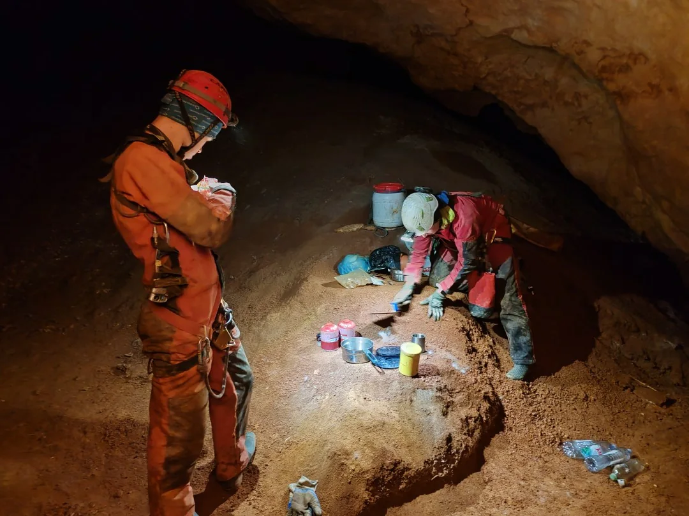